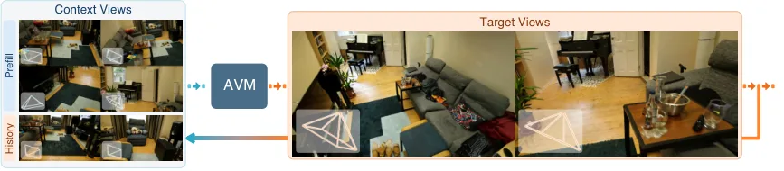
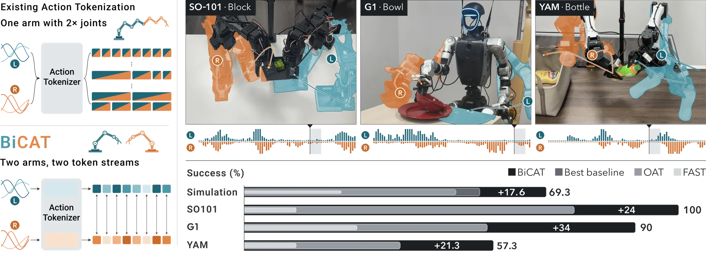
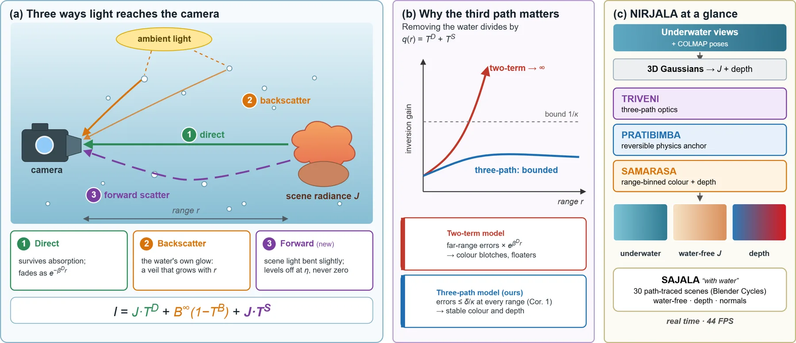
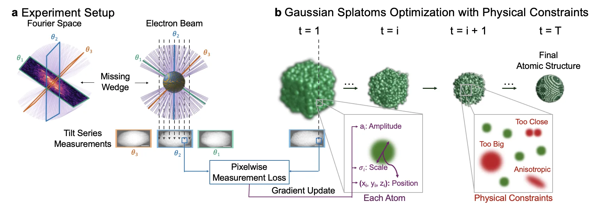
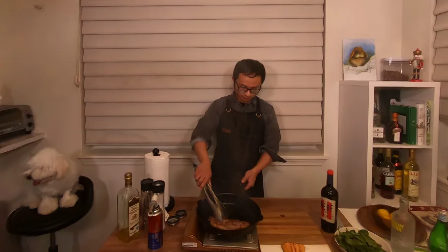
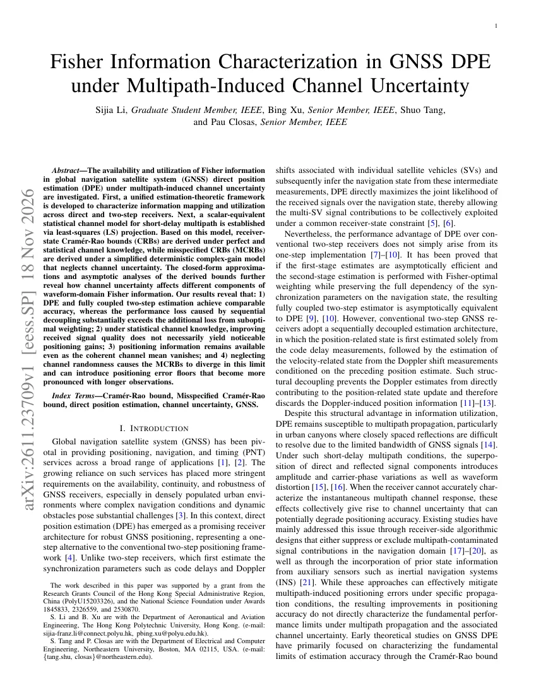

新论文 · 日期 2026-11-19 · score 10 · S层 · Learning + Geometric Optimization SLAM/VIO · cs.CV
内容级别：完整单篇海报
作者：Jensen (Jinghao), Zhou, Samuel Rota Bulo, Denis Rozumny, Duncan Zauss, Peter Hedman, Nikhil Keetha, Philip Torr, Christian Rupprecht, Andrea Vedaldi, Peter Kontschieder
评分 8.7/10
视角生成视频扩散长程一致性位姿条件上下文检索4D 重建
一句话工作总结：一句话：不建 3D，用“有界 in-context 池 + 位姿检索”把长视频生成的回访一致性做到 28.04 dB；值得借鉴的是检索式上下文与位姿条件注入，而不是把它当几何后端。
AVM 以短片段流的方式生成场景，不构造显式 3D 表征：通过统一的 in-context 接口，它以图像或视频为条件，沿请求的相机轨迹生成短 clip。视觉上下文负责重建与插值，预训练视频先验负责外推到未见区域；模型从输入与已生成历史中按相机位姿或时间戳检索相关视图，使每个目标的上下文有界。作者在 14B 双向视频扩散 transformer 上以 flow matching 做 N-in-1-out 微调，再在…
We present the Autoregressive View Model (AVM), which generates a scene as a stream of views without constructing an explicit 3D representation. Through a unified in-context interface, AVM conditions on images…

新论文 · 日期 2026-11-19 · score 9 · A层 · Robotic Foundation Models / VLA · cs.RO, cs.CV
内容级别：半海报
作者：Amrit Lal Singh, Smarak Kanjilal
评分 8.1/10
VLA数据增强解耦表征LIBERO-PRO物体位姿鲁棒性
一句话工作总结：一句话：把“东西在哪”做成可置换的显式输入，并用数据重排逼策略必须读它；0.21B 参数在 LIBERO-PRO 拿到 0.72，置换位置输入即失效，是一个干净的因果证据。
VLA 模型在 LIBERO 上看似饱和，但在 LIBERO-PRO 上一旦物体移动或指令改写就崩溃。作者认为缺的不是规模而是解耦：现有策略把“做什么”与训练时的物体位置、周围场景和指令措辞绑在一起。他们在两处切断这些绑定：数据侧按通用规则重排 LIBERO 演示（物体与家具随机位姿、任务移植到其他环境与桌面、指令全部改写）；策略侧用冻结 DINOv3 特征上的感知引擎把场景以解耦形式交给动作模型——物体列表及其位…
Vision-language-action (VLA) models look saturated on LIBERO, yet most of them fall apart on LIBERO-PRO as soon as an object moves or the instruction asks for something new. We argue that what is missing is no…

新论文 · 日期 2026-11-19 · score 7 · A层 · Robotic Foundation Models / VLA · cs.RO
内容级别：半海报
作者：Xuanwei Liu, Guipu Cao, Zhongyi Luo, Jiafei Duan
评分 7.7/10
动作 tokenizer双臂操作VLAFSQ跨臂注意力半自回归
一句话工作总结：一句话：tokenizer 里做“共享运动表征 + 伙伴条件化”，比在 policy 里隐式学协调更有效；仿真 69.3% 对 51.7%，紧耦合任务 +21.3 点。
自回归 VLA 用视觉语言骨干的 next-token 目标预测离散动作 token，因此 tokenizer 定义了策略与机器人之间的接口。双臂操作中两臂共享运动库又通过互补角色协调，动作表征应同时抓住这两点；但多数 tokenizer 把双臂拼成一个动作向量，既不能共享共同运动模式，又把跨臂依赖纠缠在每个 token 里。BiCAT 让两臂共享一套运动表征，同时通过对称 cross-arm attention…
Autoregressive vision-language-action (VLA) models predict discrete action tokens with the next-token objective of their vision-language backbone, so the action tokenizer defines the interface between the poli…
新论文 · 日期 2026-11-19 · score 6 · A-层 · Real-time / GPU Robotics Systems · eess.SP
内容级别：简报式摘要
作者：Mohammad Ghassemi, Han Zhang, Akram Bin Sediq, Ali Afana, Melike Erol-Kantarci
评分 4.6/10
6Gagentic AI基础模型编排MCP网络自动化
一句话工作总结：一句话：把大模型放在编排层、让小模型留在控制回路，是 6G 网络自动化的一种分层 agent 架构；与几何/状态估计无直接接口，仅作跨域方法观察。
移动网络参数爆炸、业务多样化、流量变化快于人工调参。现有自动化 ML 模型各自只做一个任务、条件变化就退化、且需专家重训。本文提出 FM-in-the-loop：基础模型负责理解自然语言意图、拆解子任务、通过 MCP 接口协调任务专用轻量 agent 并监督其生命周期，而编排 FM 不进入时延关键的控制回路。作者定位了四个生命周期阶段中的七个集成点，比较三种云到边缘部署，并评估两个要素：无线 FM 的信道表征在噪声…
Mobile networks are outgrowing manual tuning: parameters multiply, services diversify, and traffic shifts faster than experts can react. The machine learning (ML) models that automate radio control are narrow:…

新论文 · 日期 2026-11-19 · score 14 · B层 · Neural Rendering / 3DGS / NeRF · cs.CV, cs.GR
内容级别：简报式摘要
作者：Latchan Chhetri, Aman Kumar
评分 6.5/10
3DGS水下成像前向散射物理约束新视角合成
一句话工作总结：一句话：把“前向散射”补进水下成像模型，并用可逆物理约束防止水体拟合吞掉场景；合成基准与真实数据都刷新最好成绩，44 FPS 可实时。
水下图像不只被水染色：每个像素混合了衰减后的场景辐射、后向散射光、以及前向散射的场景光，多组“场景+水体”参数能解释同一像素。多数水下 3DGS 只建模前两项，用指数衰减的透射率做除法去水，反演增益随距离无界增长。NIRJALA 提出 TRIVENI 三路径成像模型（直射透射 + 后向散射 + 距离饱和的前向散射），证明反演增益在任意距离有界，并给出参数误差传播界；PRATIBIMBA 可逆物理锚把神经水体模型与十…
Water does not just tint an underwater photograph; it rewrites it. Each pixel mixes attenuated scene radiance, backscattered light, and scene light scattered forward on its way to the camera, and many combinat…

新论文 · 日期 2026-11-19 · score 11 · B层 · Neural Rendering / 3DGS / NeRF · eess.IV, cs.CV
内容级别：简报式摘要
作者：Nalini Singh, Tiffany Chien, Cedric Lim, Arthur R. C. McCray, Colin Ophus, Laura Waller
评分 6/10
3DGS电子断层扫描原子结构物理先验科学成像
一句话工作总结：一句话：把“原子”当成高斯基元，让物理先验直接作用在参数上；在低剂量、少视角条件下比体素重建更稳，是 3DGS 思想进入科学成像的一个清晰案例。
原子电子断层扫描（AET）从不同倾角的二维投影重建材料的三维原子结构。受高斯泼溅启发，作者提出以原子为中心的参数化：不再用体素网格，而把样品建模为一串原子，每个原子是一个带可学习位置、尺度与幅度的 3D 高斯。该表示便于加入物理先验——原子各向同性、最小原子间距、真实原子半径。仿真表明，在测量数有限、电子剂量低等真实成像挑战下，它比体素基线更稳健；对实验中的 23,000 原子铁铂纳米颗粒，重建比已发表的体素结果更…
Atomic electron tomography (AET) computationally reconstructs the 3D atomic structure of materials from a series of 2D projection measurements acquired at different tilt angles. Inspired by Gaussian splatting…

新论文 · 日期 2026-11-19 · score 10 · B层 · Neural Rendering / 3DGS / NeRF · cs.CV
内容级别：简报式摘要
作者：Ashim Dahal, Nikesh Subedi, Rabab Abdelfattah, Nick Rahimi
评分 6.3/10
流式 3DGS动态场景物体中心局部形变自由视点视频
一句话工作总结：一句话：把“物体分组 + 刚体估计 + 局部形变残差”接进流式 3DGS，收益不大但方向明确——用物体结构约束 anchor 的分配与边界。
流式 3DGS 可从多视角视频在线重建动态场景，用于自由视点视频。现有省时省存储的方法依赖选取 anchor 高斯并做邻域插值，但会忽略物体自身运动、在物体边界产生不一致。OCLDA-GS 提出以物体为中心的流式框架：动态重分配物体与运动感知的 anchor，把高斯邻域限制在物体组内以获得更准边界；同时估计物体级刚体变换（如手部运动），并用它学习每个 anchor 的局部形变修正（如衣服褶皱）。在三个动态多视角数据…
Streaming 3D Gaussian Splatting (3DGS) allows for online reconstruction of dynamic scenes from multi-view videos for Free Viewpoint Video (FVV). Current time and storage efficient methods rely on selecting a s…

新论文 · 日期 2026-11-19 · score 11 · C层 · 纯 GNSS/INS / PPP-AR · eess.SP
内容级别：简报式摘要
作者：Sijia Li, Bing Xu, Shuo Tang, Pau Closas
评分 6.2/10
GNSS直接位置估计Fisher 信息CRB多径信道不确定性
一句话工作总结：一句话：在多径信道不确定时，“先估参数再定位”的顺序解耦损失远大于加权次优；忽略信道随机性会制造误差地板——对可靠状态估计的误差建模有直接方法论价值。
本文研究 GNSS 直接位置估计（DPE）在多径导致信道不确定性时 Fisher 信息的可用性与利用方式。作者建立统一估计理论框架，刻画直接法与两步法接收机之间的信息映射；用最小二乘投影得到短延迟多径的标量等效统计信道模型，并在此模型下分别推导完美信道知识、统计信道知识下的 CRB，以及忽略信道随机性的误设 CRB（MCRB）。闭式近似与渐近分析揭示了信道不确定性如何影响波形域 Fisher 信息的不同分量。结论包…
The availability and utilization of Fisher information in global navigation satellite system (GNSS) direct position estimation (DPE) under multipath-induced channel uncertainty are investigated. First, a unifi…